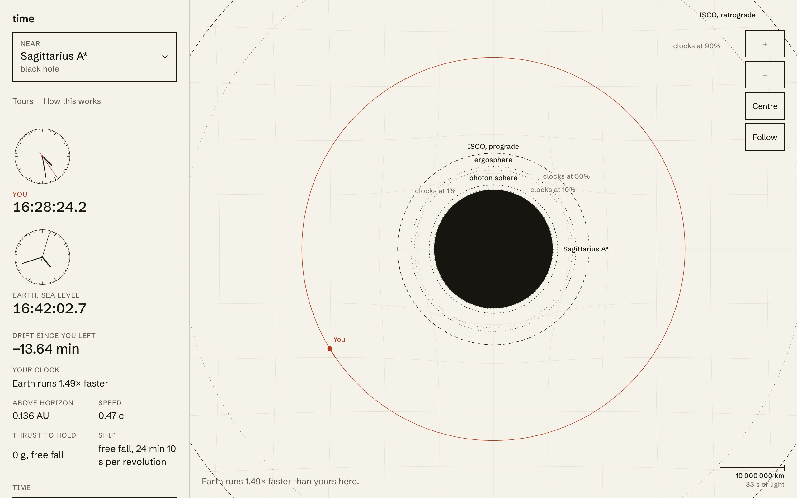

- One clock on the page sits at sea level on Earth and shows your actual local time.
- The other left Earth in sync with it when the page loaded and is now on a ship around whichever body you picked.
- playtime.seanre.id
- sourcegithub.com/sean-reid/time